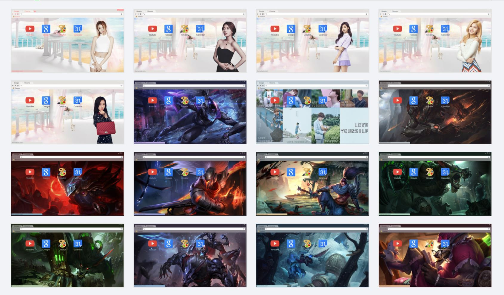

Google Chrome Theme
Sejak tahun 2017, di sela-sela waktu kosong saya membuat tema google chrome. Total tema yang telah saya buat hingga hari ini adalah sebanyak 45 tema dan telah di download sebanyak 1594 kali.